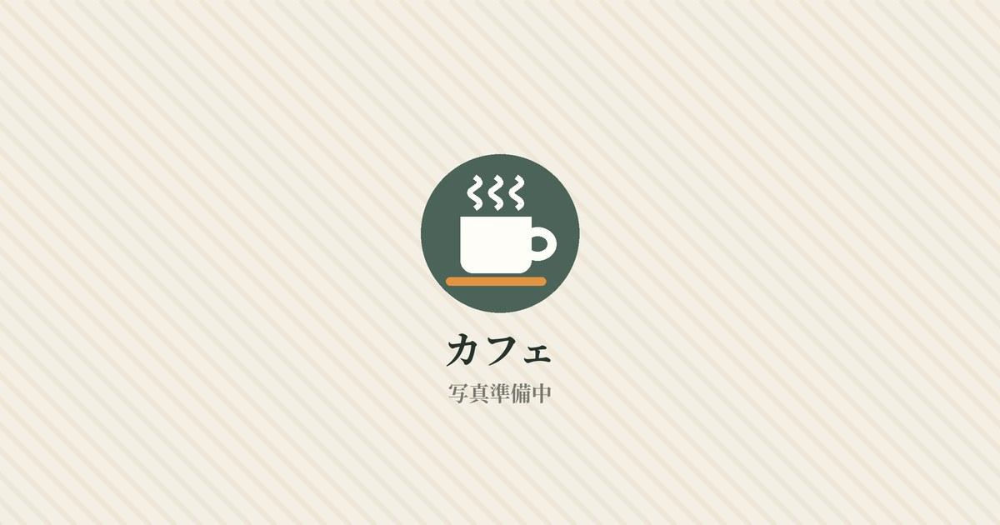

Basking Coffee ropponmatsu
📍 六本松
カラフルな外観とレトロな店内のギャップが魅力。2階のソファ席は居心地抜群で、読書や会話をゆっくり楽しめる六本松のカフェ。


📍 六本松
カラフルな外観とレトロな店内のギャップが魅力。2階のソファ席は居心地抜群で、読書や会話をゆっくり楽しめる六本松のカフェ。
📍 博多駅
博多駅すぐ、ガラス張りの窓際と木の温もりある店内が魅力。PC作業の人が多く、電車や新幹線の待ち時間に集中したいときに便利なカフェ。
📍 六本松
薄暗くウッド調の落ち着いた店内で、数十種類の豆から選べる六本松のコーヒースタンド。アパレルショップも併設しています。
📍 赤坂
入口の大きな焙煎機が迎えるレトロな名店。好みの珈琲とこだわりのフルーツケーキで、2階の木漏れ日の中ゆったり過ごせます。
📍 大名
深夜まで営業している大名のにぎやかなカフェ。ソファ席が充実し、アメリカーノとチーズケーキで友人との時間を楽しめます。
📍 博多駅
福岡行きの航空券をモチーフにした入口が目印。固めのプリンにアイスをのせられるスイーツと、FUKの文字入りカップが人気のカフェ。
📍 赤坂
けやき通りから1本入った住宅街にある、朝活にぴったりのカフェ。コーヒーからティー、アルコールまで揃い、朝の光の中で過ごせます。
📍 別府
白を基調とした店内に花が生けられた、居心地のよいカフェ。渦巻き模様のラテアートと手作りスイーツを、向かいの古本屋の本と一緒に。
📍 大濠
ガラス張りの外観から自然光が差し込む、大濠公園近くのカフェ。朝ランのあとのコールドブリューや、テイクアウトして公園で過ごすのも◎。
📍 平尾
フォトスポットや入口の木製ブランコが目を引く、平尾の韓国風カフェ。友人とにぎやかに過ごしたい日に。